연비·정비 기록 앱 — 검수 결과
- 테스트 47개 전부 통과 — 엔진 29(연비·부분/누락 주유·정비 알림·CSV) + 로봇 18
- 로봇이 누른 횟수 604번 (서로 다른 동작 145종), 스크린샷 92장
- 기기 3종(iPhone 13 · SE · 15 Pro Max) × 라이트/다크 × 글씨 100%/135% — 잘린 글자·넘치는 칸·가려진 버튼·VoiceOver 로 못 누르는 버튼 0
- 웹 미리보기(크롬) 자동 점검 7/7, 콘솔 에러 0
- 확인 못 한 것: 실제 아이폰 알림 표시, iOS 빌드(TestFlight 전), 다른 앱이 실제로 내보낸 CSV(형식은 공개 코드로 추정)
바로 해 보기: 빈 상태로 시작 · 예시 기록으로 둘러보기
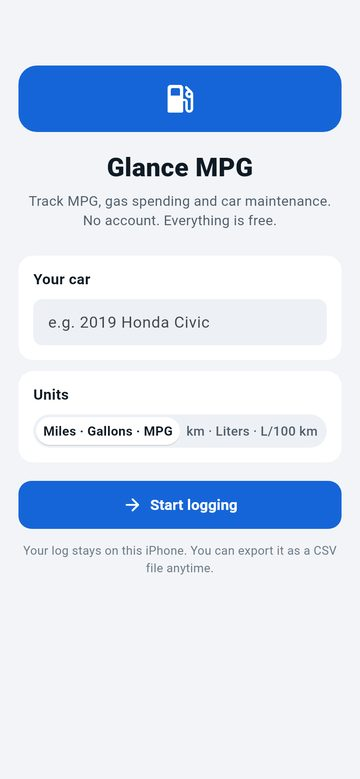
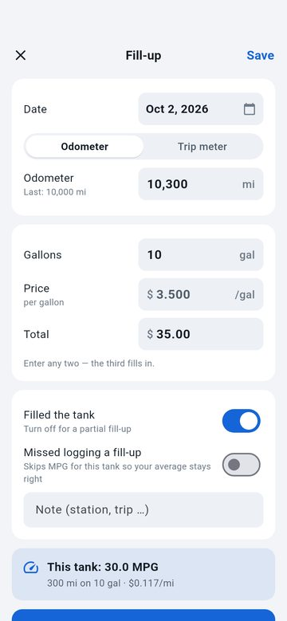
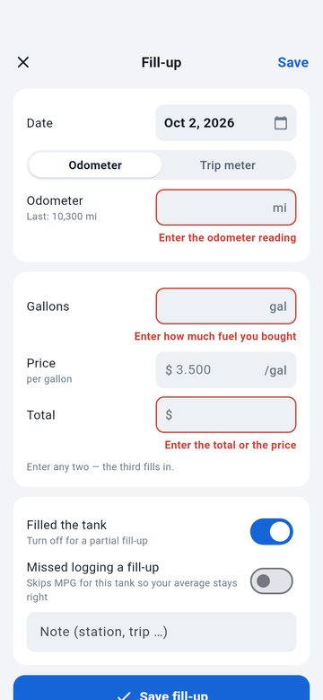
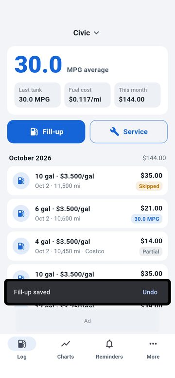
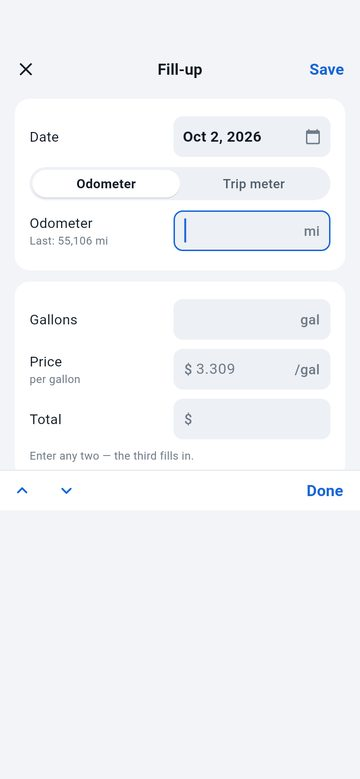
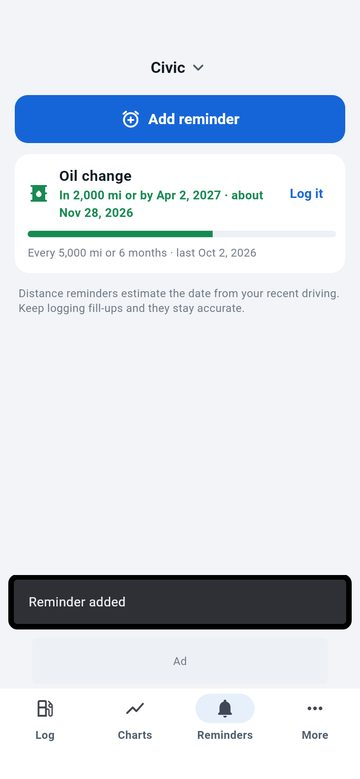
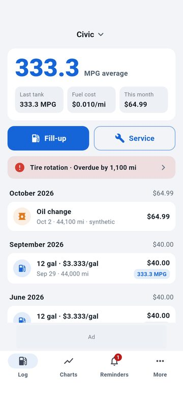
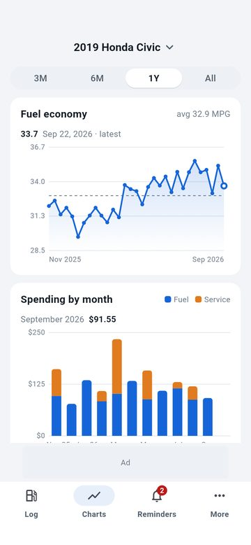
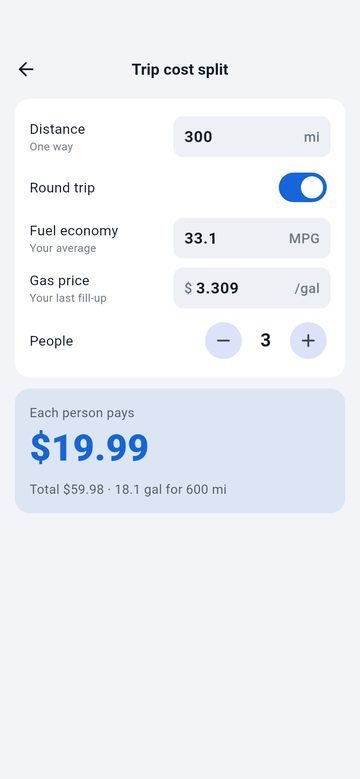
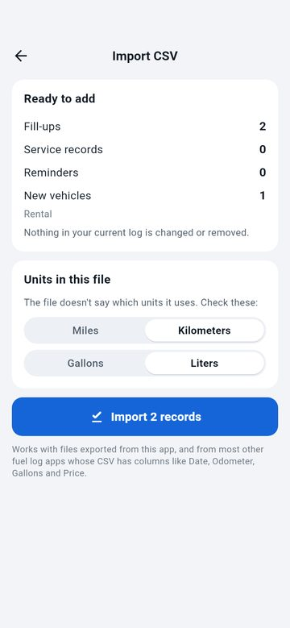
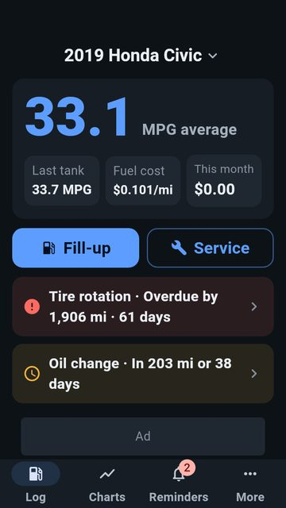
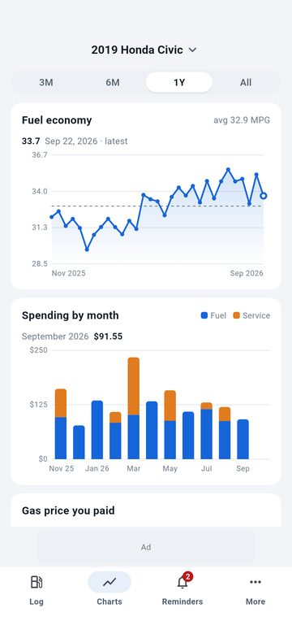
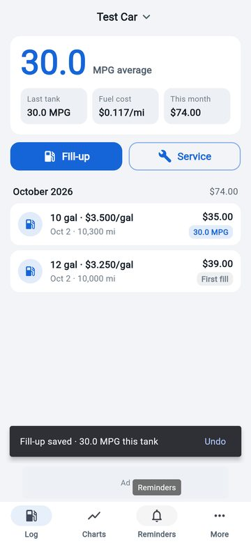
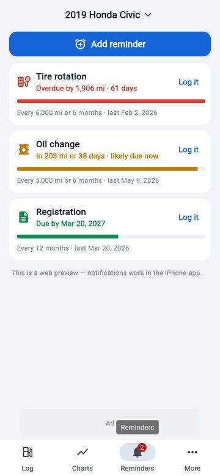
로봇이 누른 것 전체 (145종)
Log it · Remind me next time · add-fill · add-reminder · add-service · back from trip · back from vehicles · cancel add vehicle · cancel file picker · close untouched form · confirm-cancel · confirm-ok · custom reminder · date-done · delete civic · discard · due row → reminders tab · edit first fill-up · fill-close · fill-delete · fill-save · fill-save-top · imp-dist-km · imp-go · imp-vol-l · import junk file · import same file again · keyboard done · keyboard next · keyboard next 2 · keyboard previous · kind-Brakes · kind-Car wash · kind-other · more-export · more-import · more-trip · more-vehicles · name-cancel · name-ok · notification schedule check (4) · open date picker · open fill-up · open last-done date · open reminder · open service · open vehicle picker · pick-long · picker-add · picker-done · picker-manage · quick add oil change · range all · range m3 · range m6 · range y1 · rem-close · rem-delete · rem-hmum8m0mgq07 · rem-save · rename civic · rename then cancel · restart + restore from backup · rk-Coolant · rk-Inspection · rk-Oil change · same file: L · same file: km · save empty form · save with odometer error · save without kind · service date · svc-close · svc-delete · svc-save · svc-save-top · switch to truck · tab-charts · tab-log · tab-more · tab-reminders · tap MPG chart · tap cost chart · toggle full tank off · toggle missed fill-up · toggle notify off · trip meter mode · trip-minus · trip-plus · trip-round · type fill-note=Costco · type fill-note=edited · type fill-odo=10000 · type fill-odo=10100 · type fill-odo=10300 · type fill-odo=10500 · type fill-odo=10600 · type fill-odo=10700 · type fill-odo=11500 · type fill-odo=12000 · type fill-odo=9999999.9 · type fill-price=3.25 · type fill-price=3.5 · type fill-price=999.999 · type fill-total=21 · type fill-total=35 · type fill-trip=150 · type fill-vol=10 · type fill-vol=12 · type fill-vol=4 · type fill-vol=6 · type fill-vol=9999.999 · type rem-custom=Spark plugs · type rem-every= · type rem-every=30000 · type rem-last-odo=41000 · type rem-months= · type svc-cost=12 · type svc-cost=120 · type svc-cost=320 · type svc-cost=64.99 · type svc-cost=999999.99 · type svc-custom=Detailing · type svc-note=synthetic · type svc-odo=44100 · type trip-dist=300 · type trip-dist=99999 · type welcome-name=My Civic · u-dist-km · u-dist-mi · u-econ-kml · u-econ-l100km · u-vol-gal · u-vol-l · undo delete · undo last vehicle delete · undo reminder delete · undo service delete · undo vehicle delete · units: US · units: metric · veh-add · veh-del-v · vehicle-switch · welcome-start